Chapter 5 Python 数据可视化
5.1 Matplotlib
Matplotlib 是一个用于创建各种类型图表和图形的强大Python库。本教程将介绍如何使用Matplotlib来创建不同类型的图表，自定义图表样式，以及一些常见的绘图技巧。
5.1.1 绘图工作流
- 导入 Matplotlib：
在 Python 脚本或 Jupyter Notebook 中导入 Matplotlib 库。通常使用以下导入语句：
- 准备数据：
创建要绘制的数据。这可以是单个数据集或多个数据集，具体取决于要绘制的图表类型。
- 创建图形：
使用 plt.figure() 创建一个图形对象。图形对象是图表的容器，可以包含一个或多个子图（Axes）。可以通过 figsize 参数设置图形的大小。
- 创建子图（Axes）：
使用 plt.subplot() 或 plt.subplots() 函数创建子图。子图是实际的绘图区域，可以在其中绘制图表。
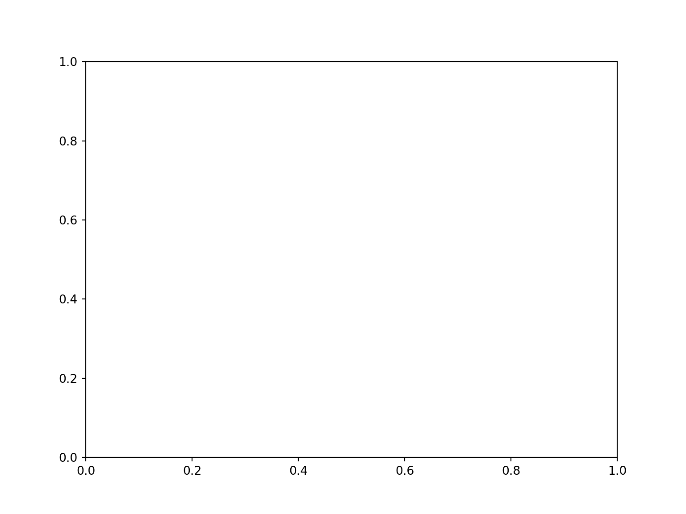
- 绘制图表：
使用不同的 plt 函数（如 plot()、scatter()、bar() 等）来绘制数据。根据需要自定义线条、颜色、标记和样式。
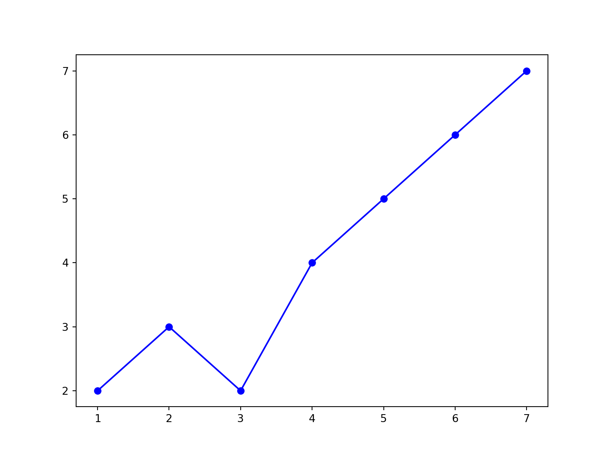
- 添加标签和标题：
使用 xlabel()、ylabel() 和 title() 函数来添加 X 轴和 Y 轴的标签，以及图表的标题。
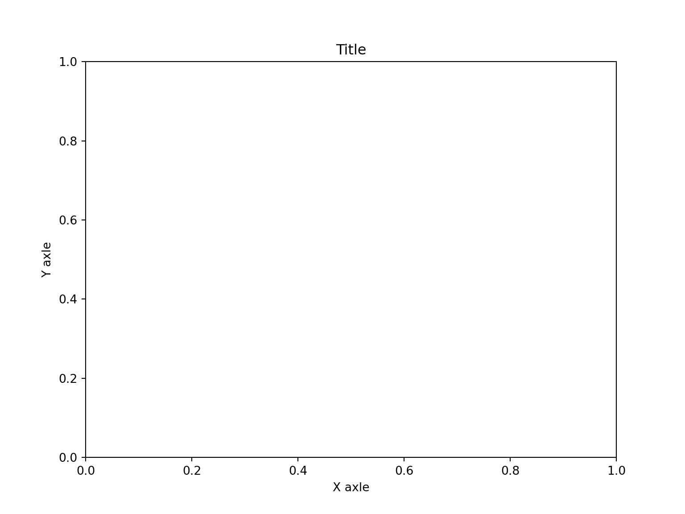
- 自定义图表：
进行其他自定义操作，如添加图例、网格线、坐标轴范围、刻度、刻度标签等。这可以根据具体需要进行。
## (0.0, 6.0)## ([<matplotlib.axis.XTick object at 0x120611dd0>, <matplotlib.axis.XTick object at 0x120611050>, <matplotlib.axis.XTick object at 0x12062acd0>, <matplotlib.axis.XTick object at 0x120661d50>, <matplotlib.axis.XTick object at 0x12067d490>], [Text(1, 0, 'A'), Text(2, 0, 'B'), Text(3, 0, 'C'), Text(4, 0, 'D'), Text(5, 0, 'E')])- 显示图表：
使用 plt.show() 函数来显示绘制的图表。这将呈现图形并显示在屏幕上。
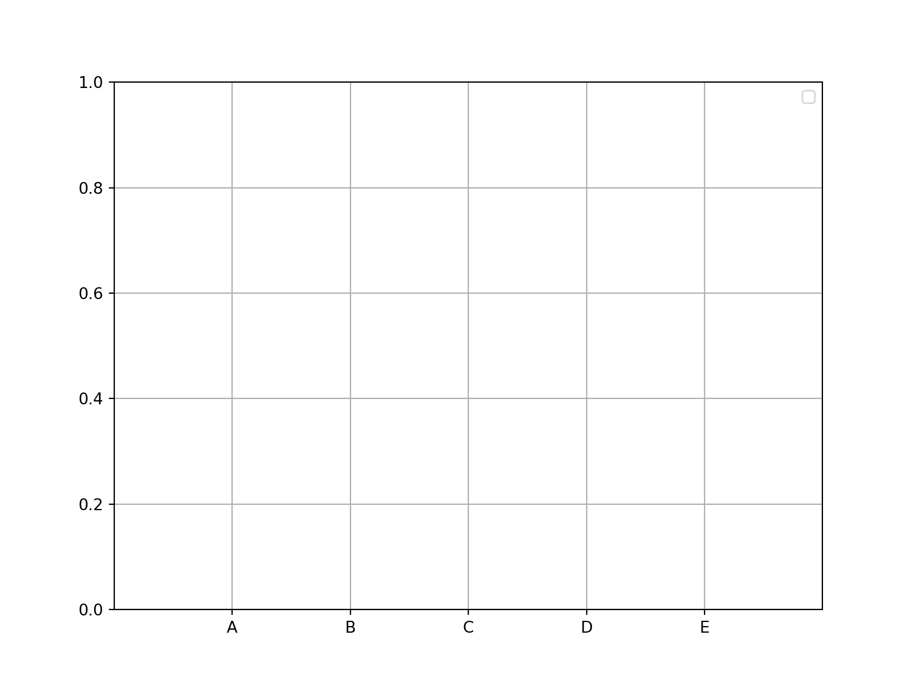
- 保存图表（可选）：
如果需要将图表保存为图像文件，可以使用 savefig() 函数。
plt.savefig('my_plot.png')这些步骤构成了Matplotlib的基本绘图流程。
5.1.2 使用Matplotlib绘制各类图形
- 绘制折线图
import matplotlib.pyplot as plt
x = [1, 2, 3, 4, 5]
y = [10, 14, 8, 22, 6]
plt.plot(x, y, marker='o')
plt.xlabel('Time')
plt.ylabel('Sales Volume')
plt.title('Monthly sales trend')
plt.show()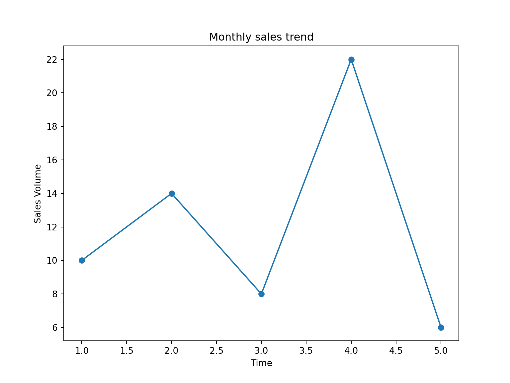
- 绘制散点图
import matplotlib.pyplot as plt
height = [165, 170, 175, 180, 185]
weight = [60, 70, 80, 90, 100]
plt.scatter(height, weight, marker='o')
plt.xlabel('Height')
plt.ylabel('Weight')
plt.title('Height VS Weight')
plt.show()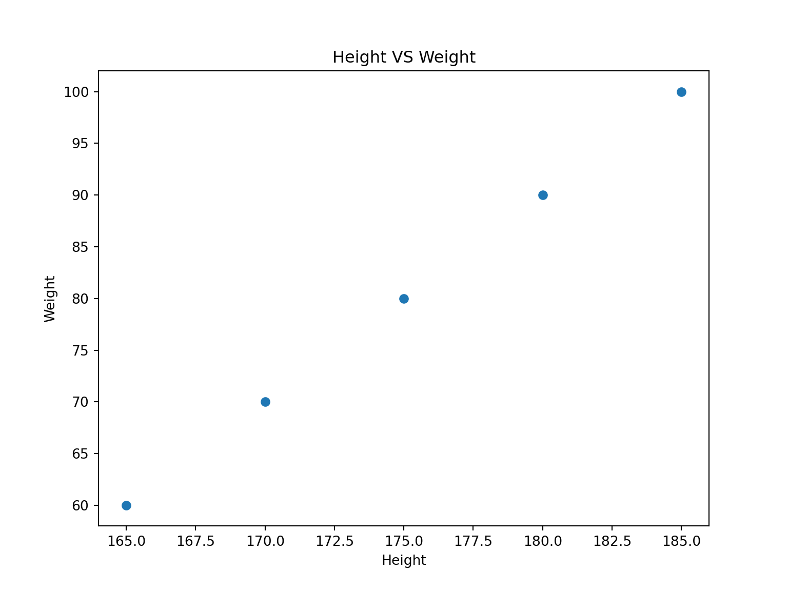
- 绘制柱状图
import matplotlib.pyplot as plt
cities = ['CityA', 'CityB', 'CityC', 'CityD']
population = [1000000, 1500000, 800000, 1200000]
plt.bar(cities, population)## <BarContainer object of 4 artists>plt.xlabel('City')
plt.ylabel('Population')
plt.title('comparison of population in different city')
plt.show()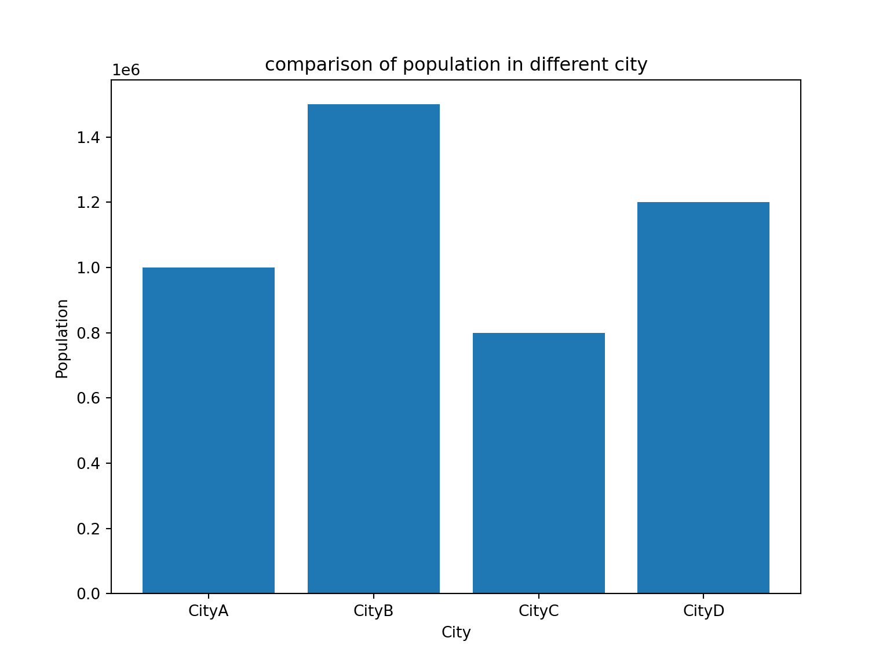
- 绘制直方图
import matplotlib.pyplot as plt
data = [70, 85, 90, 65, 78, 92, 88, 72, 80, 95, 75, 68, 82]
plt.hist(data, bins=5)## (array([3., 2., 3., 2., 3.]), array([65., 71., 77., 83., 89., 95.]), <BarContainer object of 5 artists>)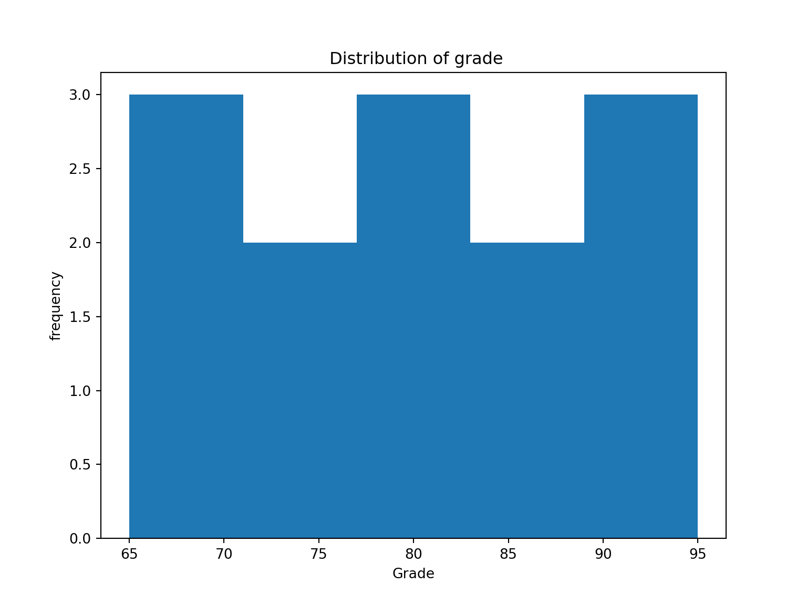
- 箱线图
箱线图用于显示数据的分布和异常值。下面是一个箱线图的示例：
## {'whiskers': [<matplotlib.lines.Line2D object at 0x1207fa050>, <matplotlib.lines.Line2D object at 0x1207fa390>], 'caps': [<matplotlib.lines.Line2D object at 0x1207fa650>, <matplotlib.lines.Line2D object at 0x1207fa990>], 'boxes': [<matplotlib.lines.Line2D object at 0x1207e9d50>], 'medians': [<matplotlib.lines.Line2D object at 0x1207fad10>], 'fliers': [<matplotlib.lines.Line2D object at 0x120806090>], 'means': []}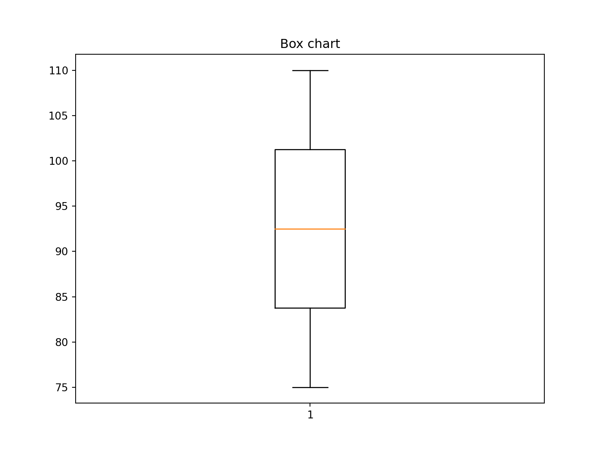
- 小提琴图（Violin Plot）:
小提琴图显示了数据的分布，类似于箱线图，但更详细。下面是一个小提琴图的示例：
import matplotlib.pyplot as plt
import seaborn as sns
data = [75, 80, 85, 90, 95, 100, 105, 110]
sns.violinplot(data)
plt.title('Violin Chart')
plt.show()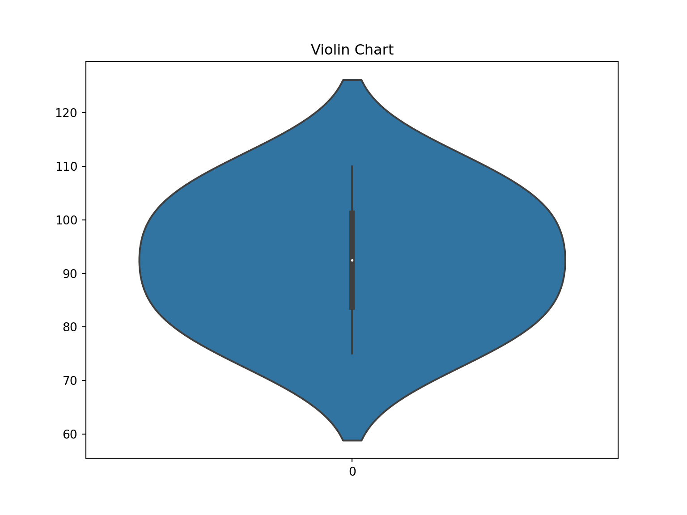 注意，小提琴图通常需要安装 Seaborn 库。
- 气泡图（Bubble Plot）:
气泡图用于显示三维数据，其中两个轴表示数据的两个维度，而气泡的大小表示第三个维度。下面是一个气泡图的示例：
import matplotlib.pyplot as plt
x = [1, 2, 3, 4]
y = [10, 15, 13, 18]
size = [50, 100, 150, 200]
plt.scatter(x, y, s=size, alpha=0.5)
plt.xlabel('X axle')
plt.ylabel('Y axle')
plt.title(' Bubble Chart')
plt.show()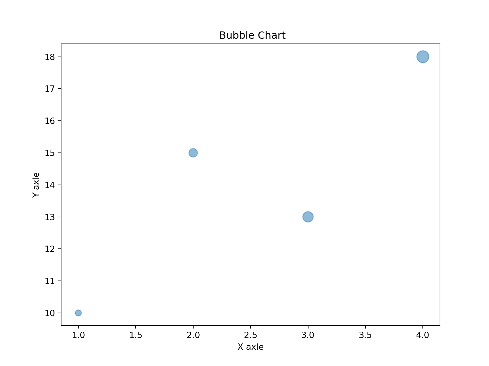
- 桑基图（Sankey Diagram）:
桑基图用于显示元素之间的流动，通常用于展示流量或转换。绘制桑基图需要使用一些专门的库，如 matplotlib-sankey。
import matplotlib.pyplot as plt
from matplotlib.sankey import Sankey
fig, ax = plt.subplots()
sankey = Sankey(ax=ax, unit=None, scale=1 / 15)
sankey.add(flows=[25, -5, -20], labels=['Input', 'Losses', 'Output'])## <matplotlib.sankey.Sankey object at 0x120806750>## [namespace(angles=[0, 0, 0], flows=array([ 25, -5, -20]), patch=<matplotlib.patches.PathPatch object at 0x131d55a50>, text=Text(0, 0, ''), texts=[Text(0.29924969264773316, 0.0, 'Input'), Text(0.565022927464865, 0.6666666666666666, 'Losses'), Text(0.734572743053505, -0.16666666666666669, 'Output')], tips=array([[ 0.44924969, 0. ],
## [ 0.41502293, 0.66666667],
## [ 0.58457274, -0.16666667]]))]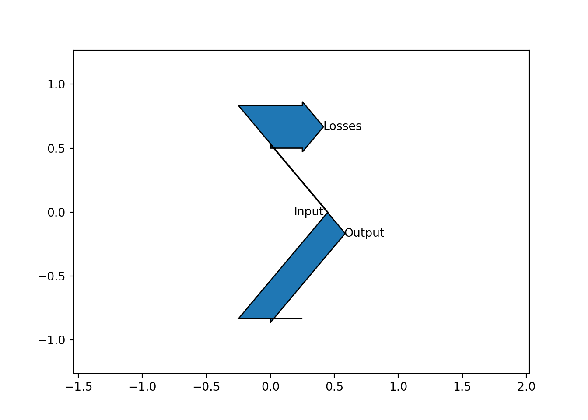
请注意，要使用桑基图，需要安装 matplotlib-sankey 包。
5.2 Plotly 绘制交互式图形
Plotly 是一个交互式的Python绘图库，它可以用于创建各种类型的交互式图表和可视化。以下是使用Plotly绘制图表的一般流程：
- 导入 Plotly 库：
在Python脚本或Jupyter Notebook中导入Plotly库：
Plotly Express是一个方便的子库，提供了一种简化创建常见图表类型的方法。
- 准备数据：
创建要可视化的数据。这可以是Pandas DataFrame、NumPy数组或其他数据结构。
- 创建图表：
使用Plotly Express或Plotly的其他绘图函数创建图表。下面是一个简单的示例：
import pandas as pd
from sklearn.datasets import load_iris
iris = load_iris()
df = pd.DataFrame(data=iris.data, columns=iris.feature_names)
fig = px.scatter(df, x='sepal length (cm)', y='sepal width (cm)', title='scatter chart')这会创建一个散点图。可以根据需要使用不同的Plotly图表函数来创建其他类型的图表。
- 自定义图表：
Plotly允许自定义图表的各个方面，包括颜色、标记、轴标签、标题、布局等。例如：
- 显示图表：
可以使用Plotly的show()函数来显示图表。如果使用Jupyter Notebook，图表将自动嵌入在笔记本中。
- 导出图表（可选）：
可以使用write_html()、write_image()等函数将图表导出为HTML文件或图像文件。这在需要共享或嵌入图表时很有用。
fig.write_html('plotly_chart.html')